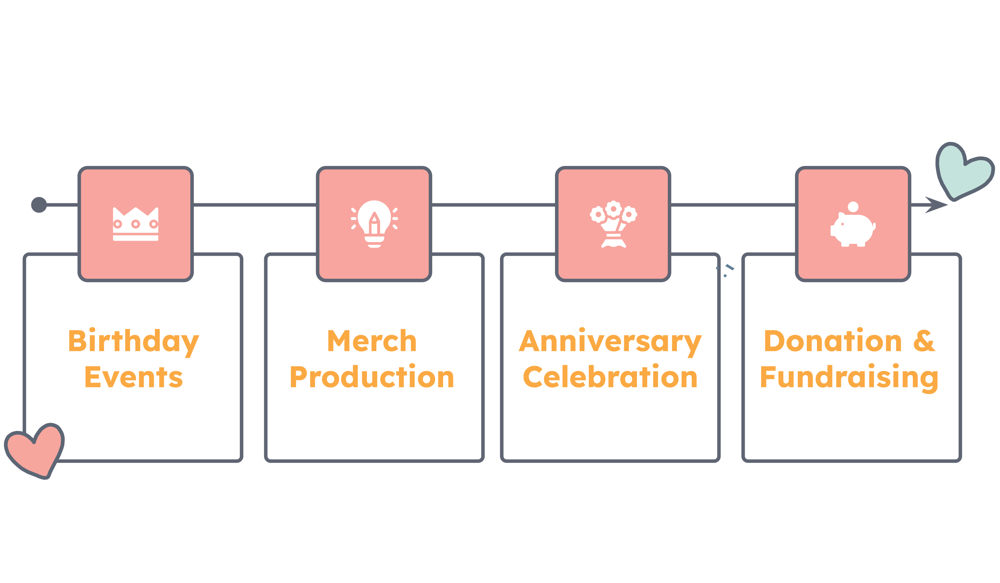

Top Social Media in Japan
- Here are the top three social media used for fan activities in Japan.
-

Line is a messaging and communication app widely used among all ages in Japan. In the 10 years since its launch, Line has become the leading social platform in the country, with roughly 68% of the population on the app. Apart from YouTube, no other social network has been able to rival Line's hold on the Japanese market.
Line started as a mobile messaging app, but has since evolved into a “super app” of sorts, with a mission to become the “life infrastructure” for its users. The app's portfolio includes everything from news and social feeds to banking and healthcare services.
Much like China's WeChat and South Korea's KakaoTalk, the platform grew from a chat app into a hub for entertainment, social and day-to-day activities. Imagine YouTube, Spotify, WhatsApp, Instagram, Reddit, Clubhouse and Uber combined… and more.
On August 19, 2019, LINE announced the launch of OpenChat, the new enhanced group functionality. Here is a video introduction: Line OpenChat.
LINE OpenChat is a community service that allows anonymous users to create chat rooms in the LINE Messenger app for various communication purpose including review, knowledge sharing, real-time Q&A, and commerce. OpenChat aims to serve as a platform for communication beyond the scope of "place" and "relationship" in the community platform market where sharing live content is becoming increasingly important.
OpenChat allows users to have group chats and share information with other users with similar hobbies, interests, and lifestyles. This is especially useful for fans across the globe to create community and engage in discussions of favorite idols, songs, albums, recent news and more!

Japan is Twitter's second largest market globally. Beyond common activities like translating official content and sharing news and media, Twitter is a great platform for event programming and promotion.
Fan coordinated events in Japan for Kpop range from member birthday events, merch production and sales, anniversary celebration, donation and fundraising.
During V's birthdays, fan-organized celebration is a serious of events taking place in both Japan and Korea. You can see the promotion materials are very consistent, organzied, and well-designed.

Here is another example of fans selling merchendise to celebrate members' birthdays:

Here are examples of other events:


Finally, Instagram is great for visual story telling. Trending topics in Japan include fashion, food, entertainment, and pop culture. Common fan activities are photo sharing, merch giveaway, fan fictions and arts in Japanese style.
Japanese culture also affects social media usage. One interesting finding is that in Japan, Personal privacy is highly valued along with low self-disclosure. That's why japanese fan engagement might seem to be lower compared to other countries.

The Kpop wave popularity is also reflected in the convergence of Korean and Japanese langauges and cultures.
Now people use the word pronounced as 'pen (ペン)' to describe fans, instead of using the pronunciation 'huan (ファン)' which Japanese used for many years to describe groups of fans that follow specific stars. Other K-pop fan-related words are also used without translation:
- sasen (サセン)
- - Korean word Sasaeng used to describe overly intrusive fans
- chikkemu (チッケム)
- - Korean word Jikcam meaning fan-made film clips
- penmi (ペンミ)
- - Fan Meeting
References:
How K-pop culture reshapes Japan's music industry and fans
In 2020, Japan topped the list of countries that tweeted a lot about K-pop on Twitter, reflecting the strong presence of South Korean music in Japan. The number of K-pop albums that reached the top 100 of Japan's Oricon charts in 2020 reached 26. Japanese fans also participate in many online activities. We will examine the use of social media in facilitating fan activities in Japan. The three social media are Line, Twitter, and Instagram.